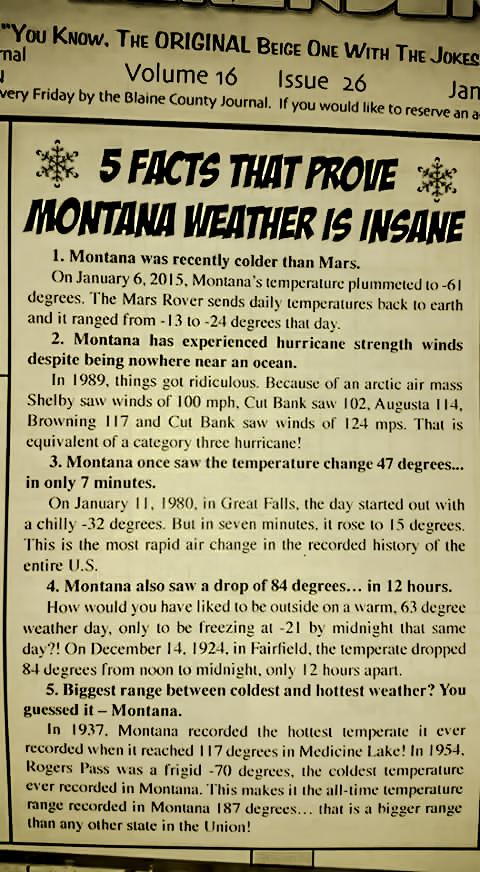

- James Taylor, "You've Got A Friend"
Seasons come and seasons go. There will always be four, even if some seem shorter or longer than others.Living in Montana, it definitely feels like some seasons are skipped every once in a while. One interesting way to look at or appreciate the seasons is through beautiful photographs, funny memes, or quotable quotes. Here is a small compilation of such material for your enjoyment.
- Ralph Waldo Emerson
- Burgess Meredith (Quotefancy)